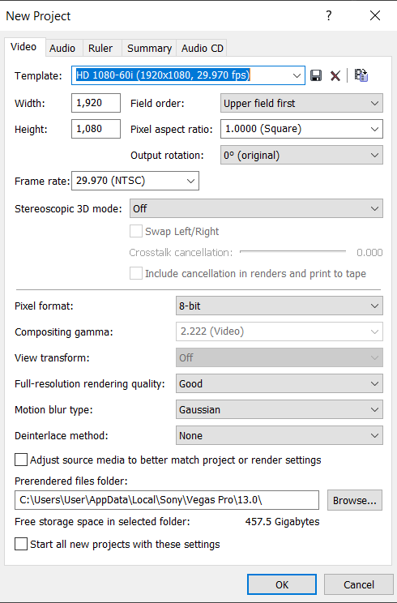
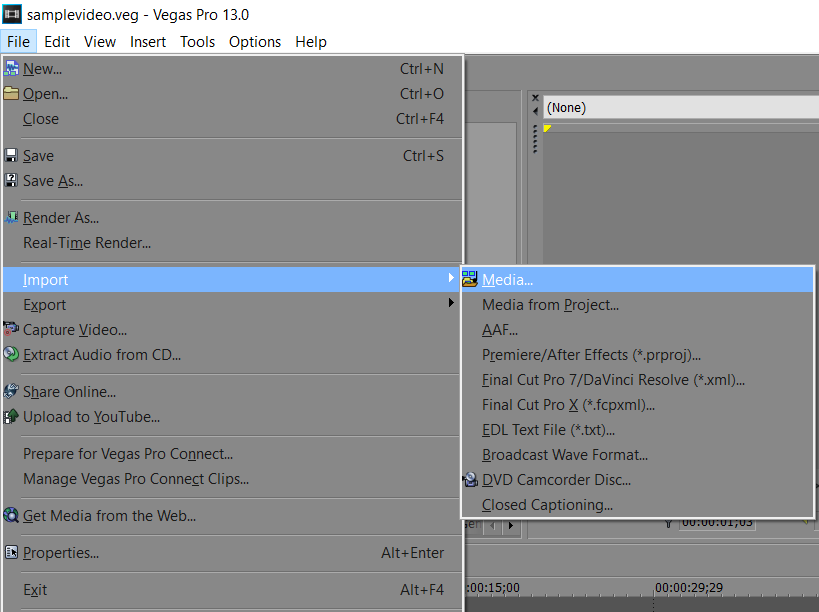
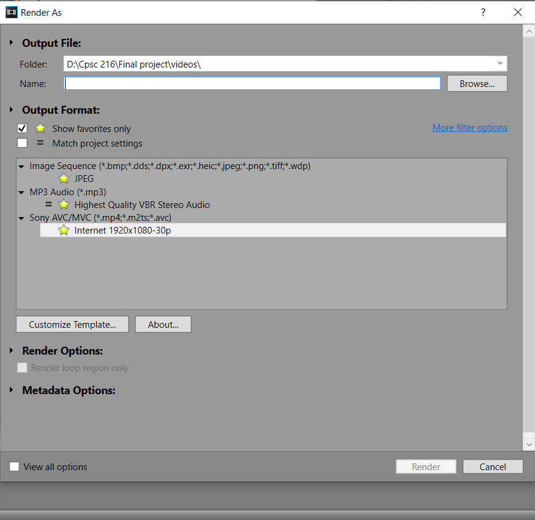

Basics
Before getting started producing videos, there are a few functions that need to be acknowledged.
Creating the Project
After launching a program, some will give you the option to change project settings. Sony Vegas 13 does not do this automatically on start up but creating a new project in the file tab will give you the option. If you don't know the specifications of your video, dragging your video onto the timeline will do it automatically, which we'll get into more under the importing section.
Importing
Importing is how you can bring video footage into the workspace. For most editing softwares, you can import by going to the file tab on the top left of the toolbar and clicking on the import selection, which will open up your media folder. Another way to import is to drag and drop your video onto the timeline. In Sony Vegas 13, the program gives the option for you to use the default height and width (1920 x 1080) or you can use the height and width that the video was originally made for.
Exporting and Rendering
Exporting is how you can move your video out of the program and back to your media folder, desktop, flash drive, or location of choice with all the changes you've made. You can render videos, images, audio clips, and a variety of different formats that are offered by the program you are using. Longer projects take a longer time to render, and how many clips you have on the timeline can also slow down this process. If you are using any of the Adobe video editors, you should consider downloading Adobe Media Encoder. This program renders much faster than Adobe Premiere Pro's rendering sequence. For example, a video that would have taken 2 hours to render for me on Adobe Premiere Pro, took less than two minutes to render on Adobe Media Encoder. Keep in mind, Exporting and Rendering are two different things. If you want to make a video, you should render it. If you want to move or save the entire project, you should export it.